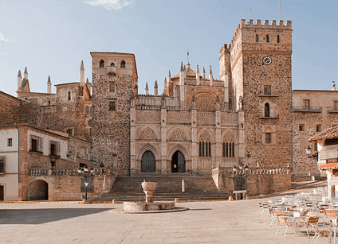
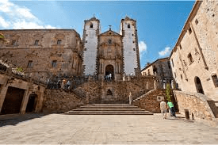
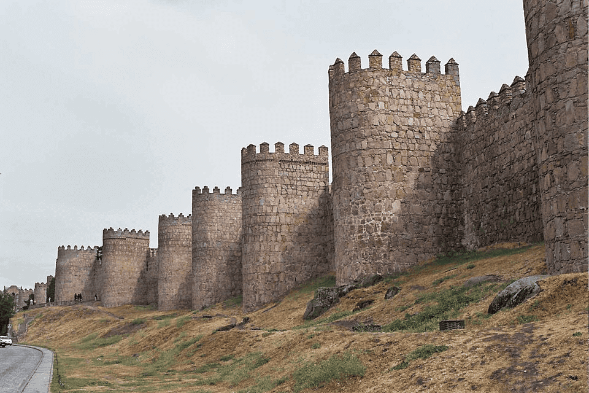

La ciudad del Guggenheim”, también podríamos llamar a este destino del País Vasco, ya que desde que se construyó este original museo en 1997, Bilbao se transformó para siempre. De hecho, ahora impacta por sus estructuras rompedoras creadas por prestigiosos arquitectos y es toda una referencia internacional de modernidad.
Lugares que puedes visitar
Pistas gastronómicas para conocer la ciudad
Bilbao brilla también en lo gastronómico y ¡lo sabe! Las siete calles del Casco Viejo y su Plaza Nueva, la calle Licenciado Poza de Indautxu, los Jardines de Albia, en El Ensanche… Muchas son las rutas posibles para “ir de potes”, el equivalente a salir a tomar un aperitivo de mañana, tarde o noche. Aunque existen visitas guiadas que combinan degustación de pintxos y museos.
El significado cultural del pintxo
La elaboración de un pintxo es un ejercicio de creatividad tan amplio como las combinaciones de ingredientes conocidas y por conocer, por tanto, infinito. Estos pequeños aperitivos son prácticamente una seña de identidad para los bilbaínos. Ir “descubriendo” sabores de bar en bar es una apetecible aventura culinaria. A diferencia de otras zonas de España, en Euskadi el pintxo no se considera una tapa gratuita y se paga aparte. Así, cada establecimiento busca siempre esa mezcla de productos estrella que logre marcar tendencia en la ciudad o bien fidelizar a los clientes habituales. Imaginación, pasión por la gastronomía y, por supuesto, buena materia prima son fundamentales para alcanzar esa excelencia.

Plaza de San Jorge
En esta plaza de gran belleza te sorprenderá la Iglesia de San Francisco Javier, una iglesia jesuita de estilo barroco construida en el siglo XVIII.
Es uno de esos rincones que convierten a Cáceres en una de las ciudades con encanto de España. El interior de la iglesia se puede visitar y, además, podrás subir al mirador.
En las escaleras que suben desde la plaza hasta el interior de la iglesia se encuentra una escultura de bronce de San Jorge matando al dragón, la representación de una leyenda que dice que tras la muerte del animal en ese duelo, la ciudad se pudo convertir al cristianismo.

La Muralla
Sin duda, es uno de los principales monumentos de Cáceres. Es de origen romano y más tarde, en el siglo XII, fue reconstruida por los almohades.
Aunque originalmente se creó con una función defensiva, hoy envuelve la parte antigua de la ciudad.
Se conserva casi en su totalidad y en ella están integradas, entre otras, la Torre de los Púlpitos y la Torre de Bujaco. Desde esta última, podrás acceder a un pequeño tramo de la muralla y caminar sobre ella.

Gastronomía
Si eres un amante de la gastronomía, estos son algunos de los platos típicos que deberías probar: la Torta del Casar, un queso cremoso producido en la provincia de Cáceres; las migas cacereñas, un plato cuyo ingrediente principal son las migas de pan, sencillo pero muy sabroso; el jamón ibérico criado en las dehesas de Extremadura, realmente exquisito; las flores extremeñas, un dulce con forma de flor perfecto para el postre; el zorongollo, una ensalada de pimientos rojos asados, tomates, ajo y aceite de oliva que no puedes dejar de probar; y muchos platos más.
Cáceres es una de las ciudades Patrimonio de la Humanidad en España. Con el tercer conjunto monumental más grande de Europa, en esta ciudad podrás transportarte a la época del Renacimiento y, sobre todo, a la medieval gracias a sus calles, plazas, palacios y murallas especialmente bien conservados.